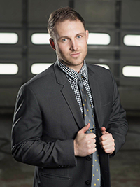

About Me
Hey! My name is Griffin. I'm a professional photographer who is on a temporary Vacation to the illustrious city of Cleveland Ohio for the next couple years. I enjoy spending time hanging out with my miniature Australian shepherd and drinking craft beer. I come from one of the main beer meccas Denver Colorado so my tastes in beer tend to be expensive, and because of that, I work as a Marketer for Edge of the Box Marketing in Beechwood Ohio.
I am a German/American with dual citizenship, although I don't speak a lick of German (I really should learn it)...but I digress... I'll just stick to be partially fluent in Spanish. I enjoy traveling to other countries and experiencing cultures other than my own, I am a thrill seeker and with enough coin, I would travel the world until I die. My favorite activities are playing soccer, snowboarding hiking, Mountain biking, wakeboarding, surfing, playing pickup basketball, and doing 5 and 10k obstacle run courses..
Connect with Me